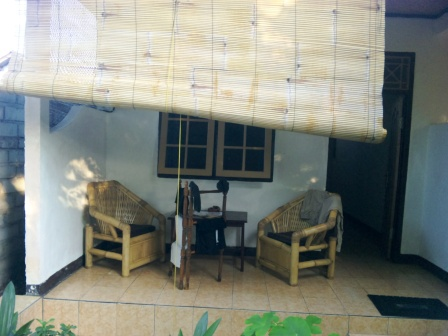
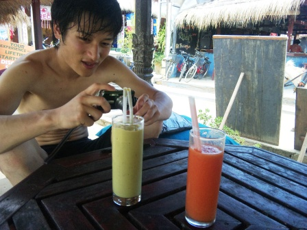
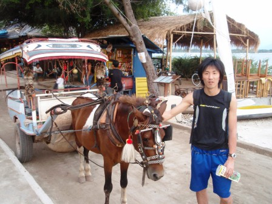

5日目～Shark
Point＆Coral Fun Garden～

インドネシアに来てからもう5日目の朝だ。このバルコニーはお気に入り。蒸し暑くても、スコールが降っていても、ここでボーっとしていればいつの間にか時間は過ぎていく。日本で卒論とバイトに明け暮れていたころがうそのようだ。この日は午前と午後の2回海洋実習がある。実習と言っても、今までビデオやプールで学んできたことをいかしつつ、自由に海中散歩をするような感じなのでとても楽しめる内容になっている。午前はまずシャークポイントと呼ばれるサメがよく出没する海域でのダイビングを楽しんだ。この日も写真は撮ったのだが、残念ながら後に渡されたCD-ROMの中には入っていなかった。シャークポイントにはあまり小魚はおらず、ものさみしい感じ。ただ、水深はかなりあり、オープンウォーターのリミットを超える水深20mまで潜ることができた。水面付近に比べ、少し海水温が低くなるが、それでも寒いと感じることは全くなかった。

昼食時にパパイヤとアボガドのフレッシュジュースを注文。濃厚なフレッシュジュースが100円以下で楽しめるのはこの国の大きな魅力、なのだが、アボガドジュースは濃厚すぎてジュースというよりも、プロテインクリームといった感じだった。味もとてもおいしいとは言えない。一方、パパイヤジュースは南国の雰囲気が漂い、味もGood。この後、午後の海洋実習に臨んだ。最後の海洋実習の舞台となるのはコーラルファンガーデン。今回も深度２０ｍを超えた。多くの熱帯魚ばかりでなく、ウミガメや、一匹ではあるがササッと通り過ぎるサメにも遭遇できたというのに、撮ったはずの写真は午前の分と同様にCD－ROMには入っていなかったのでとても残念。この先もしダイビングに行くことがあったら、自分のデジカメを防水ケースに入れてぜひ持参したい。

全ての海洋実習を終えてメインストリートを散歩。この島で活躍している馬たち。主人が用事で馬車を離れているときでも、おりこうにちゃんと待っているのだから関心。
翌日へ